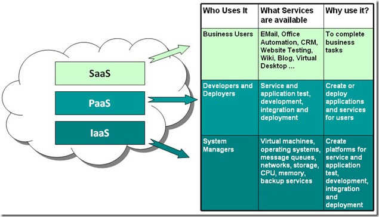

一步步精通Docker容器实战
Table of Contents
1 Docker简介

2 CentOS7安装和基本使用
2.1 虚拟机中安装CentOS7
2.2 备份安装镜像和通过VMware制作快照
2.3 Windows下远程连接CentOS7
2.4 Linux下远程连接CentOS7
ssh root@192.168.1.105 #输入密码 #切换到root用户 su root #输入root密码 #退出root账户进入user账户 exit #再输入exit断开远程连接
3 Docker CE安装
3.1 Docker CE
$ sudo yum install -y yum-utils
$ sudo yum-config-manager \
--add-repo \
https://download.docker.com/linux/centos/docker-ce.repo
#$ sudo yum-config-manager --enable docker-ce-edge
#禁用
$ sudo yum-config-manager --disable docker-ce-edge
$ sudo yum makecache fast
$ sudo yum install docker-ce
#$ sudo yum install docker-ce-<VERSION>
#$ yum list docker-ce.x86_64 --showduplicates |sort -r docker-ce.x86_64 17.03.0.el7 docker-ce-stable
$ sudo systemctl start docker
$ sudo docker run hello-world
4 Docker特点


1.更快速的交付和部署
2.更高效的虚拟化
3.更轻松的迁移和扩展
4.更简单的管理
4.1 虚拟化技术比较
容器相比虚拟机更轻量
4.1.1 虚拟机

4.1.2 容器

5 Docker结构和组成
5.1 结构和组成


客户端服务端模式可单机可分布式部署
服务端负责docker镜像的构建，运行，发布.
5.1.1 The Docker daemon
接收Docker API请求和管理docker的对象例如镜像、容器、网络、存储卷等，
也可以和其他的Docker daemon通信管理docker的service
5.1.2 The Docker client
可以和多个daemon进行通信，发送指令给daemon, 用户和daemon交互主要方式。
5.1.3 Docker registries
存储docker镜像,Docker Cloud是一个公共仓库,是docker默认的仓库。
可以搭建私有仓库。
docker Cloud有docker可信仓库。
拉取，推送镜像到设定仓库。
Docker store允许用户购买和出售自己的镜像，也可以免费发布自己的镜像。
5.1.4 Docker objects
在使用docker的时候，将会涉及到创建、使用镜像、容器、网络、卷、插件或者其他的对象。
5.2 指令
Management Commands:
container Manage containers
image Manage images
network Manage networks
node Manage Swarm nodes
plugin Manage plugins
secret Manage Docker secrets
service Manage services
stack Manage Docker stacks
swarm Manage Swarm
system Manage Docker
volume Manage volumes
Commands:
attach Attach to a running container
build Build an image from a Dockerfile
commit Create a new image from a container's changes, docker commit -m='A new image' --author='vker' 614122c0aabb vker/bvok
cp Copy files/folders between a container and the local filesystem 使用符号:区分源和目标
create Create a new container
diff Inspect changes to files or directories on a container's filesystem
events Get real time events from the server
exec Run a command in a running container
export Export a container's filesystem as a tar archive
history Show the history of an image
images List images
import Import the contents from a tarball to create a filesystem image
info Display system-wide information
inspect Return low-level information on Docker objects
kill Kill one or more running containers
load Load an image from a tar archive or STDIN
login Log in to a Docker registry
logout Log out from a Docker registry
logs Fetch the logs of a container
pause Pause all processes within one or more containers
port List port mappings or a specific mapping for the container
ps List containers
pull Pull an image or a repository from a registry
push Push an image or a repository to a registry
rename Rename a container
restart Restart one or more containers
rm Remove one or more containers docker rm $(docker ps -a -q)
rmi Remove one or more images docker rmi $(docker images -q)，docker rmi $(docker images | grep "^<none>" | awk "{print $3}")
run Run a command in a new container
save Save one or more images to a tar archive (streamed to STDOUT by default)
search Search the Docker Hub for images
start Start one or more stopped containers
stats Display a live stream of container(s) resource usage statistics
stop Stop one or more running containers
tag Create a tag TARGET_IMAGE that refers to SOURCE_IMAGE
top Display the running processes of a container
unpause Unpause all processes within one or more containers
update Update configuration of one or more containers
version Show the Docker version information
wait Block until one or more containers stop, then print their exit codes
docker run ：创建一个新的容器并运行一个命令
-a stdin: 指定标准输入输出内容类型，可选 STDIN/STDOUT/STDERR 三项
-d: 后台运行容器，并返回容器ID
-i: 以交互模式运行容器，通常与 -t 同时使用
-t: 为容器重新分配一个伪输入终端，通常与 -i 同时使用
–name="nginx": 为容器指定一个名称
–dns 8.8.8.8: 指定容器使用的DNS服务器，默认和宿主一致
–dns-search example.com: 指定容器DNS搜索域名，默认和宿主一致
-h "vker": 指定容器的Hostname
-e username="ritchie": 设置环境变量
–env-file=[]: 从指定文件读入环境变量
–cpuset="0-2" or –cpuset="0,1,2": 绑定容器到指定CPU运行
-m :设置容器使用内存最大值
–net="bridge": 指定容器的网络连接类型，支持 bridge/host/none/container: 四种类型
–link=[]: 添加链接到另一个容器
–expose=[]: 开放一个端口或一组端口
docker create ：创建一个新的容器但不启动它
docker exec ：在运行的容器中执行命令
-d :分离模式: 在后台运行
-i :即使没有附加也保持STDIN 打开
-t :分配一个伪终端
docker inspect : 获取容器/镜像的元数据。
docker top :查看容器中运行的进程信息，支持 ps 命令参数。
查看所有运行容器的进程信息。
for i in `docker ps |grep Up|awk '{print $1}'`;do echo \ &&docker top $i; done
docker attach :连接到正在运行中的容器。
docker events : 从服务器获取实时事件
-f ：根据条件过滤事件
–since ：从指定的时间戳后显示所有事件
–until ：流水时间显示到指定的时间为止
docker logs : 获取容器的日志
-f : 跟踪日志输出
–since :显示某个开始时间的所有日志
-t : 显示时间戳
–tail :仅列出最新N条容器日志
docker wait : 阻塞运行直到容器停止，然后打印出它的退出代码。
docker port :列出指定的容器的端口映射，或者查找将PRIVATEPORT NAT到面向公众的端口。
docker cp :用于容器与主机之间的数据拷贝。
docker diff : 检查容器里文件结构的更改。
docker history : 查看指定镜像的创建历史。
-H :以可读的格式打印镜像大小和日期，默认为true
–no-trunc :显示完整的提交记录
-q :仅列出提交记录ID
docker build : 使用Dockerfile创建镜像。
–build-arg=[] :设置镜像创建时的变量
–cpu-shares :设置 cpu 使用权重
–cpu-period :限制 CPU CFS周期
–cpu-quota :限制 CPU CFS配额
–cpuset-cpus :指定使用的CPU id
–cpuset-mems :指定使用的内存 id
–disable-content-trust :忽略校验，默认开启
-f :指定要使用的Dockerfile路径
–force-rm :设置镜像过程中删除中间容器
–isolation :使用容器隔离技术
–label=[] :设置镜像使用的元数据
-m :设置内存最大值
–memory-swap :设置Swap的最大值为内存+swap，"-1"表示不限swap
–no-cache :创建镜像的过程不使用缓存
–pull :尝试去更新镜像的新版本
-q :安静模式，成功后只输出镜像ID
–rm :设置镜像成功后删除中间容器
–shm-size :设置/dev/shm的大小，默认值是64M
–ulimit :Ulimit配置。
[root@localhost user]# docker info Containers: 0 Running: 0 Paused: 0 Stopped: 0 Images: 2 Server Version: 17.03.1-ce Storage Driver: overlay Backing Filesystem: xfs Supports d_type: false Logging Driver: json-file Cgroup Driver: cgroupfs Plugins: Volume: local Network: bridge host macvlan null overlay Swarm: inactive Runtimes: runc Default Runtime: runc Init Binary: docker-init containerd version: 4ab9917febca54791c5f071a9d1f404867857fcc runc version: 54296cf40ad8143b62dbcaa1d90e520a2136ddfe init version: 949e6fa Security Options: seccomp Profile: default Kernel Version: 3.10.0-327.el7.x86_64 Operating System: CentOS Linux 7 (Core) OSType: linux Architecture: x86_64 CPUs: 2 Total Memory: 3.688 GiB Name: localhost.localdomain ID: SA42:IFVV:F4SK:QLB6:PDW2:3QBQ:SRUF:ZZMN:TE4T:62XY:OFXB:I43I Docker Root Dir: /var/lib/docker Debug Mode (client): false Debug Mode (server): false Username: bvok Registry: https://index.docker.io/v1/ WARNING: bridge-nf-call-iptables is disabled WARNING: bridge-nf-call-ip6tables is disabled Experimental: false Insecure Registries: 127.0.0.0/8 Live Restore Enabled: false [root@localhost user]#
[root@localhost lib]# pwd
/var/lib
[root@localhost lib]# tree docker -L 4
docker
├── containers
├── image
│ └── overlay
│ ├── distribution
│ │ ├── diffid-by-digest
│ │ └── v2metadata-by-diffid
│ ├── imagedb
│ │ ├── content
│ │ └── metadata
│ ├── layerdb
│ │ ├── mounts
│ │ ├── sha256
│ │ └── tmp
│ └── repositories.json
├── network
│ └── files
│ └── local-kv.db
├── overlay
│ ├── 9c624a3534090b0ef2c78352487c2d35e238ac00e674015124f50092bb1f512c
│ │ └── root
│ │ ├── bin
│ │ ├── dev
│ │ ├── etc
│ │ ├── home
│ │ ├── root
│ │ ├── tmp
│ │ ├── usr
│ │ └── var
│ ├── b06d7c2247c2d8327c1154536527022b5c882d9e2281decf13923718e8099205
│ │ └── root
│ │ ├── bin
│ │ ├── dev
│ │ ├── etc
│ │ ├── home
│ │ ├── root
│ │ ├── tmp
│ │ ├── usr
│ │ └── var
│ └── b2ccaa0fb436955c68d344848036c4407481c276a66501f9b5531164eefbac46
│ └── root
│ ├── bin
│ ├── dev
│ ├── etc
│ ├── home
│ ├── root
│ ├── tmp
│ ├── usr
│ └── var
├── plugins
│ ├── storage
│ │ └── blobs
│ │ └── tmp
│ └── tmp
├── swarm
├── tmp
├── trust
└── volumes
└── metadata.db
55 directories, 3 files
[root@localhost lib]#
5.3 镜像
一般基于其他镜像，并添加自定义部分，分层构建，保留历史，构建每层结束的时候，不需要的清除，不包括动态数据。
不是整体打包的内容，而是一层层组成的。可以理解为用来创建容器的只读模板。
[root@localhost docker]# docker images REPOSITORY TAG IMAGE ID CREATED SIZE vker/websv 0.1 57ce173fc558 2 days ago 7.22 MB busybox latest 54511612f1c4 2 weeks ago 1.13 MB [root@localhost docker]# docker ps -a CONTAINER ID IMAGE COMMAND CREATED STATUS PORTS NAMES 08135140ff81 vker/websv:0.1 "sh" 39 seconds ago Exited (0) 12 seconds ago websv1 [root@localhost docker]# tree -L 4 ...... [root@localhost docker]#
[root@localhost overlay]# docker images REPOSITORY TAG IMAGE ID CREATED SIZE vker/websv 0.1 57ce173fc558 2 days ago 7.22 MB busybox latest 54511612f1c4 2 weeks ago 1.13 MB [root@localhost overlay]# pwd /var/lib/docker/image/overlay [root@localhost overlay]# tree -L 4 ...... [root@localhost overlay]#
演示
自己可以创建镜像和发布镜像，或者使用第三方发布到仓库的镜像，
自己创造镜像需要使用规定的语法编写Dockerfile文件然后执行构建，每个执行命令都会创建一层。
如果修改了Dockerfile并重新构建镜像，只有被修改的层才会被重新构建，这样构建很快，轻量，小型。
Dockerfile
# Comment INSTRUCTION arguments FROM RUN CMD LABEL EXPOSE ENV ADD COPY ENTRYPOINT VOLUME USER WORKDIR ARG ONBUILD STOPSIGNAL HEALTHCHECK SHELL
golang web源码
package main
import (
"fmt"
"net/http"
"log"
"time"
"os"
)
func hello(w http.ResponseWriter, r *http.Request) {
host, err := os.Hostname()
if err != nil {
fmt.Printf("%s", err)
} else {
fmt.Fprintf(w, time.Now().Format("2006-01-02 15:04:05 -0700"))
fmt.Fprintf(w,"\n")
fmt.Fprintf(w, host)
}
fmt.Println()
}
func main() {
http.HandleFunc("/", hello) //设置访问的路由
err := http.ListenAndServe("0.0.0.0:8080", nil) //设置监听的端口
if err != nil {
log.Fatal("ListenAndServe: ", err)
}
}
Dockerfile源码
#在Dockerfile中，#开头的被认作是注释； # Use an official alpine runtime as a parent image ##FROM centos:latest FROM alpine:latest #FROM scratch # Set the working directory to /app WORKDIR /home/vker # Copy the current directory contents into the container at ADD ./vker/ /home/vker # Run # RUN echo "run vker" >> ./server_log # Make port 8080 available to the world outside this container EXPOSE 8080 # Define environment variable ENV NAME vker # Run hello when the container launches # CMD ["/hello"]
构建
[root@localhost app]# docker build -t vker/websvbase:0.1 . ...... [root@localhost app]# cat Dockerfile ......
[root@localhost app]# docker images REPOSITORY TAG IMAGE ID CREATED SIZE vker/websvbase 0.1 4b8ff495d4c5 11 minutes ago 6.09 MB vker/websv 0.1 57ce173fc558 2 days ago 7.22 MB busybox latest 54511612f1c4 2 weeks ago 1.13 MB [root@localhost app]# docker inspect 4b ......
修改Dockerfile后再进行构建
[root@localhost app]# docker build -t vker/websvbase:0.2 . ......
演示构建简单镜像并留作业
5.3.1 参考镜像
scratch:一个空镜像，特别是用于“从头开始”构建镜像。
busybox:小镜像，适合静态编译的不依赖操作系统环境的二进制程序，演示golang编译web程序并运行在busybox下。
busybox:uclibc (微 嵌入) busybox:glibc (GNU) busybox:musl(嵌入)
alpine:5M左右，带有软件安装功能的小镜像，很适合做为基础镜像。
clearlinux:针对intel架构优化，面向云端的linux系统。
练习alpine环境下运行golang web程序
Dockerfile最佳实践
.把维护者和更新系统的命令依次写在最上方,更新最好直接从上层镜像继承。
.使用标签管理Dockerfile。
.避免映射公共端口。
.使用类似array形式的CMD和ENTRYPOINT。
.使用.dockerignore文件,应该使用一个.dockerignore文件用来排除构建镜像时不需要的文件或目录。
.避免安装不必要的软件包,为了降低复杂性、依赖性、文件大小以及构建时间，应该避免安装额外的或不必要的包。
.每个容器都跑一个进程,解耦应用到多个容器使其更容易横向扩展和重用。
.最小化层,我们知道每执行一个指令，都会有一次镜像的提交，镜像是分层的结构，对于Dockerfile，应该找到可读性和最小化层之间的平衡。
.多行参数排序,如果可能，通过字母顺序来排序，这样可以避免安装包的重复并且更容易更新列表，另外可读性也会更强，添加一个空行使用\换行:
#+benginsrc sh RUN apt-get update && apt-get install -y \ bzr \ cvs \ git \ mercurial \ subversion #+enfsrc
.创建缓存
镜像构建过程中会按照Dockerfile的顺序依次执行，每执行一次指令Docker会寻找是否有存在的镜像缓存可复用,如果没有则创建新的镜像。
如果不想使用缓存，则可以在docker build时添加–no-cache=true选项。
从基础镜像开始就已经在缓存中了，下一个指令会对比所有的子镜像寻找是否执行相同的指令，如果没有则缓存失效。
在大多数情况下只对比Dockerfile指令和子镜像就足够了。
ADD和COPY指令除外，执行ADD和COPY时存放到镜像的文件也是需要检查的，完成一个文件的校验之后再利用这个校验在缓存中查找
，如果检测的文件改变则缓存失效。
RUN apt-get -y update命令只检查命令是否匹配，如果匹配就不会再执行更新了。
为了有效地利用缓存，你需要保持你的Dockerfile一致，并且尽量在末尾修改。
FROM: 只要可能就使用官方镜像库作为基础镜像
RUN: 为保持可读性、方便理解、可维护性，把长或者复杂的RUN语句使用\分隔符分成多行
不建议RUN apt-get update独立成行，否则如果后续包有更新，那么也不会再执行更新。
避免使用RUN apt-get upgrade或者dist-upgrade，很多必要的包在一个非privileged权限的容器里是无法升级的。如果知道某个包更新，使用apt-get install -y xxx
标准写法
RUN apt-get update && apt-get install -y package-bar package-foo
CMD: 推荐使用CMD [“executable”, “param1”, “param2”…]这种格式，CMD [“param”, “param”]则配合ENTRYPOINT使用
EXPOSE: Dockerfile 指定要公开的端口，使用docker run时指定映射到宿主机的端口即可.
ENV: 为了使新的软件更容易运行，可以使用ENV更新PATH变量。如ENV PATH /usr/local/nginx/bin:$PATH确保CMD ["nginx"]即可运行
ENV也可以这样定义变量：
ENV PG_MAJOR 9.3 ENV PG_VERSION 9.3.4 RUN curl -SL http://example.com/postgres-$PG_VERSION.tar.xz | tar -xJC /usr/src/postgress && … ENV PATH /usr/local/postgres-$PG_MAJOR/bin:$PATH
ADDorCOPY:ADD比COPY多一些特性「tar 文件自动解包和支持远程 URL」，不推荐添加远程 URL
如不推荐这种方式:
ADD http://example.com/big.tar.xz /usr/src/things/ RUN tar -xJf /usr/src/things/big.tar.xz -C /usr/src/things RUN make -C /usr/src/things all
推荐使用 curl 或者 wget 替换，使用如下方式:
RUN mkdir -p /usr/src/things \
&& curl -SL http://example.com/big.tar.gz \
| tar -xJC /usr/src/things \
&& make -C /usr/src/things all
如果不需要添加 tar 文件，推荐使用COPY
5.4 容器
从镜像创建的运行实例，启动、开始、停止、删除，相当于一个完整的linux操作系统，相互隔离、保证安全，运行应用。
可以将一个容器接入多个网络，可以挂载存储，可以基于当前状态容器创建镜像。
容器运行->停止->删除 路径变化
[root@localhost docker]# tree -L 4 ...... [root@localhost docker]# ls containers image network overlay plugins swarm tmp trust volumes [root@localhost docker]# docker ps -a CONTAINER ID IMAGE COMMAND CREATED STATUS PORTS NAMES 08135140ff81 vker/websv:0.1 "sh" 34 minutes ago Up 28 minutes 0.0.0.0:8080->8080/tcp websv1 [root@localhost docker]# docker stop 08 08 [root@localhost docker]# [root@localhost docker]# docker ps -a CONTAINER ID IMAGE COMMAND CREATED STATUS PORTS NAMES 08135140ff81 vker/websv:0.1 "sh" 34 minutes ago Exited (137) 7 seconds ago websv1 [root@localhost docker]# tree -L 4 ...... [root@localhost docker]# docker rm 08 08 [root@localhost docker]# tree -L 4 ......
镜像是只读的，容器在启动的时候创建一层可写层作为最上层。
可以从一个镜像创建多个隔离的互不干扰的容器。
分配一个读写区作为最后一层。
网络默认直接使用NAT转换。
5.5 仓库
5.5.1 公有仓库
最大的公开仓库是Docker Hub
演示提交镜像到Docker Hub
国内Docker Hub仓库镜像服务器，同时也可以上传自己的镜像
5.5.2 私有仓库
docker容器的方式进行部署，客户端添加私有仓库地址。
客户端
ADD_REGISTRY='--add-registry 192.168.1.136:5000'
- 服务端
提示https
需要在服务端的docker配置文件上添加配置参数
centos7下位置为/etc/sysconfig/docker
OPTIONS='--selinux-enabled=false --log-driver=journald --insecure-registry 192.168.1.136:5000'
- 本地仓库
$ docker run -d -p 5000:5000 --restart always --name registry registry:2
可以本地使用仓库
$ docker pull ubuntu $ docker tag ubuntu localhost:5000/ubuntu $ docker push localhost:5000/ubuntu
- 远程仓库
宿主机的防火墙开通端口，docker容器做好参数配置即可。
iptables -I INPUT 1 -p tcp --dport 5000 -j ACCEPT /etc/sysconfig/docker OPTIONS='--insecure-registry 192.168.1.136:5000' #CentOS 7系统 other_args='--insecure-registry 192.168.1.136:5000' #CentOS 6系统
Ubuntu下
sudo vi /etc/init/docker.conf –insecure-registry 192.168.1.136:5000
重启docker
卷挂载
$ sudo docker run -d -p 5000:5000 -v /opt/data/registry:/tmp/registry registry
查询
如果我们想要查询私有仓库中的所有镜像，使用docker search命令：
# docker search registry_ip:5000/
如果要查询仓库中指定账户下的镜像，则使用如下命令：
# docker search registry_ip:5000/account/
同时也可以指定镜像查询。
停止仓库
$ docker stop registry && docker rm -v registry
- 本地仓库